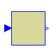
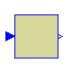
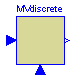
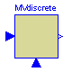
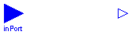
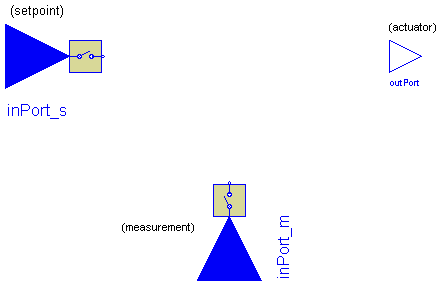
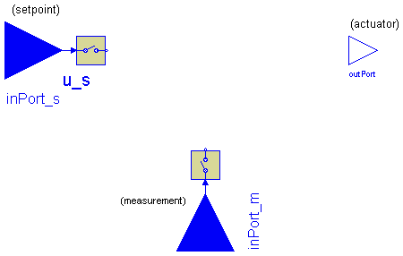

 


Block has a continuous input and a continuous output signal vector where the signal sizes of the input and output vector are identical. These signals are sampled due to the defined samplePeriod parameter.
| Name | Default | Description |
|---|---|---|
| n | 1 | Number of inputs (= number of outputs) |
| samplePeriod | 0.1 | Sample period of component [s] |
| startTime | 0 | First sample time instant [s] |
partial block DiscreteMIMOs
"Multiple Input Multiple Output discrete control block"
parameter Integer n=1 "Number of inputs (= number of outputs)";
extends DiscreteBlock;
discrete output Real u[n] "Sampled input signals";
discrete output Real y[n] "Sampled output signals";
Modelica.Blocks.Interfaces.InPort inPort(final n=n)
"Connector with input signals of type Real";
Modelica.Blocks.Interfaces.OutPort outPort(final n=n)
"Connector with output signals of type Real";
equation
when sampleTrigger then
u = inPort.signal;
end when;
outPort.signal = y;
end DiscreteMIMOs;

| Name | Default | Description |
|---|---|---|
| samplePeriod | 0.1 | Sample period of component [s] |
| startTime | 0 | First sample time instant [s] |
partial block DiscreteSISO
"Single Input Single Output discrete control block"
extends DiscreteBlock;
discrete output Real u "sampled input signal";
discrete output Real y "sampled output signal";
Modelica.Blocks.Interfaces.InPort inPort(final n=1)
"Connector with an input signal of type Real";
Modelica.Blocks.Interfaces.OutPort outPort(final n=1)
"Connector with an output signal of type Real";
equation
when sampleTrigger then
u = inPort.signal[1];
end when;
y = outPort.signal[1];
end DiscreteSISO;
ModelicaAdditions.Blocks.Discrete.Interfaces.DiscreteMIMO
Block has a continuous input and a continuous output signal vector which are sampled due to the defined samplePeriod parameter.
| Name | Default | Description |
|---|---|---|
| samplePeriod | 0.1 | Sample period of component [s] |
| startTime | 0 | First sample time instant [s] |
| nin | 1 | Number of inputs |
| nout | 1 | Number of outputs |
partial block DiscreteMIMO
"Multiple Input Multiple Output discrete control block"
extends DiscreteBlock;
parameter Integer nin=1 "Number of inputs";
parameter Integer nout=1 "Number of outputs";
discrete output Real u[nin] "Sampled input signals";
discrete output Real y[nout] "Sampled output signals";
Modelica.Blocks.Interfaces.InPort inPort(final n=nin)
"Connector with input signals of type Real";
Modelica.Blocks.Interfaces.OutPort outPort(final n=nout)
"Connector with output signals of type Real";
equation
when sampleTrigger then
u = inPort.signal;
end when;
y = outPort.signal;
end DiscreteMIMO;

partial block DiscreteBlockIcon "Graphical layout of discrete block component icon" end DiscreteBlockIcon;
ModelicaAdditions.Blocks.Discrete.Interfaces.DiscreteBlock
| Name | Default | Description |
|---|---|---|
| samplePeriod | 0.1 | Sample period of component [s] |
| startTime | 0 | First sample time instant [s] |
partial block DiscreteBlock "Base class of discrete control blocks"
extends DiscreteBlockIcon;
parameter SIunits.Time samplePeriod(min=100*Modelica.Constants.eps) = 0.1
"Sample period of component";
parameter SIunits.Time startTime=0 "First sample time instant";
output Boolean sampleTrigger "True, if sample time instant";
output Boolean firstTrigger
"Rising edge signals first sample instant";
equation
sampleTrigger = sample(startTime, samplePeriod);
when sampleTrigger then
firstTrigger = time <= startTime + samplePeriod/2;
end when;
end DiscreteBlock;
ModelicaAdditions.Blocks.Discrete.Interfaces.SVdiscrete
| Name | Default | Description |
|---|---|---|
| samplePeriod | 0.1 | Sample period of component [s] |
| startTime | 0 | First sample time instant [s] |
partial block SVdiscrete "Discrete Single-Variable controller"
extends DiscreteBlock;
discrete output Real u_s "Sampled, scalar setpoint input signal";
discrete output Real u_m
"Sampled, scalar measurement input signal";
discrete output Real y "Scalar actuator output signal";
Sampler sampler_s(
final n=1,
final samplePeriod=samplePeriod,
final startTime=startTime);
Sampler sampler_m(
final n=1,
final samplePeriod=samplePeriod,
final startTime=startTime);
Modelica.Blocks.Interfaces.InPort inPort_s(final n=1)
"Connector of setpoint input signal";
Modelica.Blocks.Interfaces.InPort inPort_m(final n=1)
"Connector of measurement input signal";
Modelica.Blocks.Interfaces.OutPort outPort(final n=1)
"Connector of actuator output signal";
equation
connect(inPort_s, sampler_s.inPort);
connect(inPort_m, sampler_m.inPort);
u_s = sampler_s.u[1];
u_m = sampler_m.u[1];
y = outPort.signal[1];
end SVdiscrete;

| Name | Default | Description |
|---|---|---|
| samplePeriod | 0.1 | Sample period of component [s] |
| startTime | 0 | First sample time instant [s] |
| nu_s | 1 | Number of setpoint inputs |
| nu_m | 1 | Number of measurement inputs |
| ny | 1 | Number of actuator outputs |
partial block MVdiscrete "Discrete Multi-Variable controller"
extends DiscreteBlock;
parameter Integer nu_s=1 "Number of setpoint inputs";
parameter Integer nu_m=1 "Number of measurement inputs";
parameter Integer ny=1 "Number of actuator outputs";
discrete output Real u_s[nu_s] "Sampled setpoint input signals";
discrete output Real u_m[nu_m] "Sampled measurement input signals"
;
discrete output Real y[ny] "Actuator output signals";
Sampler sampler_s(
final n=nu_s,
final samplePeriod=samplePeriod,
final startTime=startTime);
Sampler sampler_m(
final n=nu_m,
final samplePeriod=samplePeriod,
final startTime=startTime);
Modelica.Blocks.Interfaces.InPort inPort_s(final n=nu_s)
"Connector of setpoint input signals";
Modelica.Blocks.Interfaces.InPort inPort_m(final n=nu_m)
"Connector of measurement input signals";
Modelica.Blocks.Interfaces.OutPort outPort(final n=ny)
"Connector of actuator output signals";
equation
connect(inPort_s, sampler_s.inPort);
connect(inPort_m, sampler_m.inPort);
u_s = sampler_s.u;
u_m = sampler_m.u;
y = outPort.signal;
end MVdiscrete;